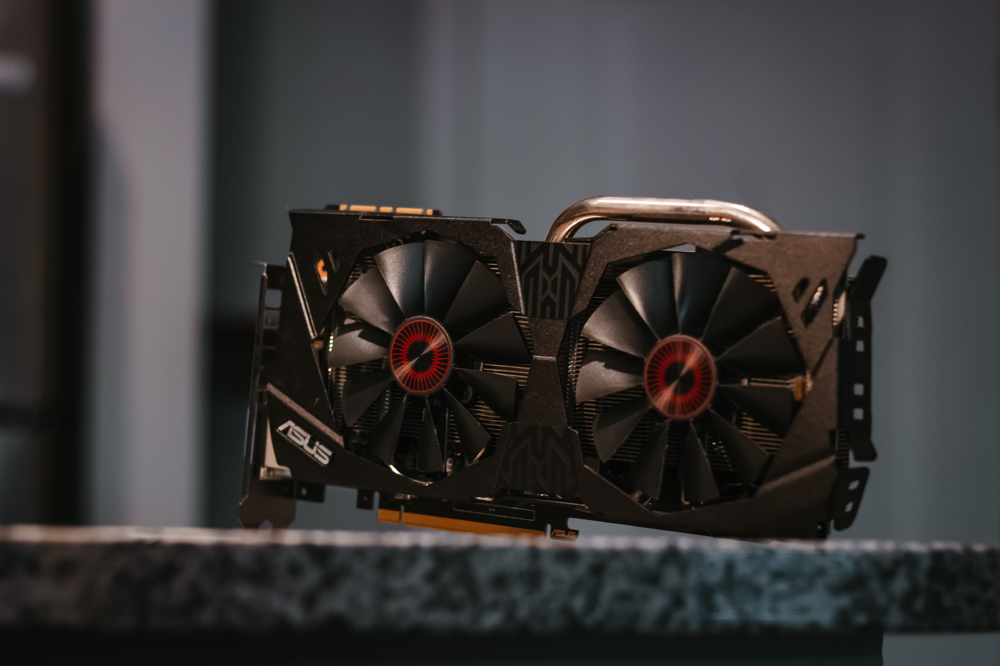

Grafikkort
Grafikkort är nog den vanligaste delen man pratar om, om man nu kanske är en gamer.
Grafikkort kan man kalla för en bildmotor och komponentens uppgift är att se till så
att det blir en bild på datorn som du sedan kan se. Om man vill skaffa sig ett
grafikkort så är det bra att tänka till vad man ska ha det till. Ska du spela spel,
eller ska du bara använda datorn till att skriva på? Om man till exempel vill spela
spel så vill nog dom flesta ha ett grafikkort som är snabbt och har mycket minne så
att spelupplevelsen blir bättre. För dom som inte spelar och kanske gör något annat
som att till exempel bara använda datorn till skolarbete så kommer standardkortet
fungera utmärkt.

CPU
Ramminne
Nätagregat
Chassie
Moderkort
Startsida